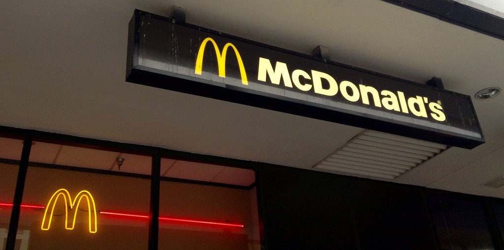

Food and Restaurants
BLT Prime
This luxurious restaurant specializes in top-of-the-line steaks and popovers. The most expensive of the list, it's located in the Trump International Hotel. This is towards adults and tourists who want to have a fancy dinner and enjoy themselves.
Address: 1100 Pennsylvania Ave NW, Washington, DC 20004

The Hamilton
======= <<<<<<< Updated upstreamThe Hamilton
>>>>>>> Stashed changesThis American restaurant serves what you would expect: burgers, steaks, and more. It is not too expensive and is a great option for a good meal.
=======The Hamilton
This American restaurant serves what you would expect: burgers, steaks, and more. This is on the more expensive side, and is farther away, meaning you would most likely go here if it were nearby a monument.
>>>>>>> Stashed changesAddress: 600 14th St NW, Washington, DC 20005

Pienza Italian Market
This is a very close option to go eat at, with buffet-style meals and continental breakfasts. Perfect for large groups of people, this is a medium-price option that is close by and has good food. They are best known for a great Breakfast.
Address: 201 Waterfront St, Oxon Hill, MD 20745

Granite City
Another chain restaurant, Granite city is less fast-food and more of an eatery, with comfort foods and good prices. It also had fast service. All in all, this is is a good option for those with a lower price bidget, and is good for small groups or solo meals. It has food for everyone of all ages.
Address: 200 American Way, National Harbor, MD 20745
Sauciety an American Grill
Known for their steaks and Seafood, this is another nearby, medium-priced restaurant. This restaurant is geared towards the older people attending, including adults and some older kids. It is best for eating here alone or with a small group of 1-3 people.
Address: 171 Waterfront St, Oxon Hill, MD 20745
McDonald's
A familair sight across all of America, this fast food-chain is very cheap and great for a quick bite. While the food may not be the highest quality, and even with a 12 minute walk from the hotel, the low cost and familiarity of McDonald's makes it a great option for someone who wants a simple, quick meal.
Address: 121 North Cove Terrace, Oxon Hill, MD 20745
